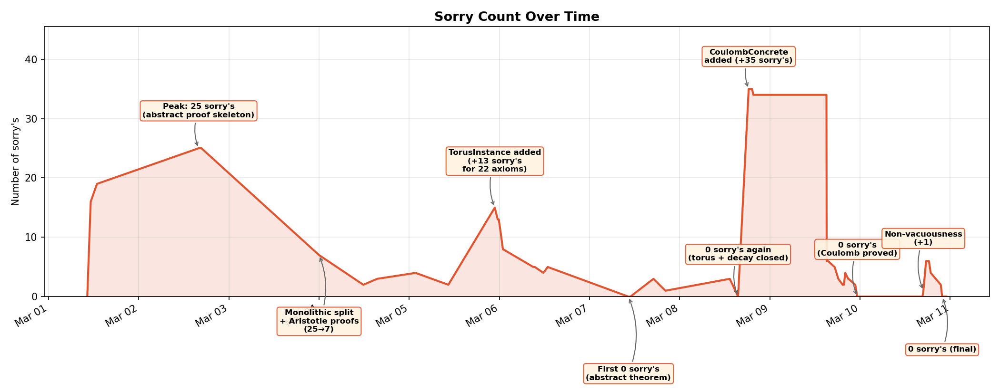
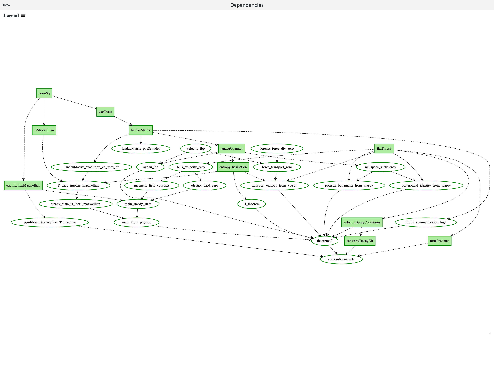
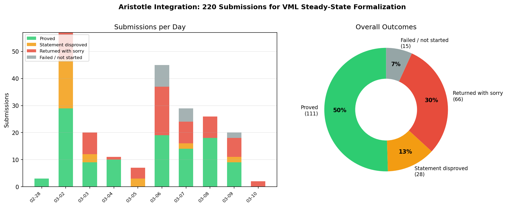

Presents a semi-autonomous Lean 4 formalization of the Vlasov-Maxwell-Landau equilibrium via an AI research loop.
Abstract
We present a complete Lean 4 formalization of the equilibrium characterization in the Vlasov-Maxwell-Landau (VML) system, which describes the motion of charged plasma. The project demonstrates the full AI-assisted mathematical research loop: an AI reasoning model (Gemini DeepThink) generated the proof from a conjecture, an agentic coding tool (Claude Code) translated it into Lean from natural-language prompts, a specialized prover (Aristotle) closed 111 lemmas, and the Lean kernel verified the result. A single mathematician supervised the process over 10 days at a cost of \$200, writing zero lines of code. The entire development process is public: all 229 human prompts, and 213 git commits are archived in the repository. We report detailed lessons on AI failure modes – hypothesis creep, definition-alignment bugs, agent avoidance behaviors – and on what worked: the abstract/concrete proof split, adversarial self-review, and the critical role of human review of key definitions and theorem statements. Notably, the formalization was completed before the final draft of the corresponding math paper was finished.
Problem
Formalizing research-level mathematical physics in a proof assistant typically requires large teams and months of effort. The Vlasov-Maxwell-Landau equilibrium characterization, which describes charged plasma motion, had not been formalized.
Approach
The authors demonstrate a full AI-assisted formalization loop: Gemini DeepThink generated the proof from a conjecture, Claude Code translated it into Lean 4 from natural-language prompts, and the specialized prover Aristotle closed 111 lemmas. A single mathematician supervised the process over 10 days at a cost of $200, writing zero lines of code. The abstract/concrete proof split and adversarial self-review were key techniques. All 229 human prompts and 213 git commits are archived.

Figure 4 : Sorry count in main/ over time (85 commits). The sawtooth pattern reflects alternating phases of scaffolding (sorry’s accumulate) and proving campaigns (sorry’s eliminated). Key events: peak 25 on Mar 2 (abstract proof chain stated); Aristotle drops count from 25 \to 7 on Mar 3; first 0 sorry’s on Mar 7 (abstract theorem proved); + 35 sorry’s on Mar 8 (Coulomb kernel instantiation begun

Figure 3 : Proof dependency graph, generated with LeanBlueprint [Massot, 2020 ] . All nodes are green (fully proved). The graph flows from primitive definitions ( normSq , eucNorm , landauMatrix ) at the top through intermediate results ( H_theorem , D_zero_implies_maxwellian , the field and conservation lemmas) down to theorem42 and its concrete Coulomb instantiation coulomb_concrete at the botto
Results
The formalization was completed in 10 days by one person writing zero lines of code, at a cost of $200. Aristotle proved 111 lemmas cleanly (50% of 220 submissions) and disproved 28 false statements (13%). The final codebase is approximately 10K lines of Lean 4 with zero sorry. The formalization was completed before the final draft of the corresponding math paper.

Figure 9 : Outcomes of 220 Aristotle submissions. Aristotle proved 111 lemmas cleanly (50%), disproved 28 false statements (13%), returned 66 with sorry’s still present (30%), and 15 failed or were never started (7%). The disproved statements were particularly valuable – they caught false conjectures early (e.g., missing measurability hypotheses, Vitali-set counterexamples, incorrect Schwartz deca